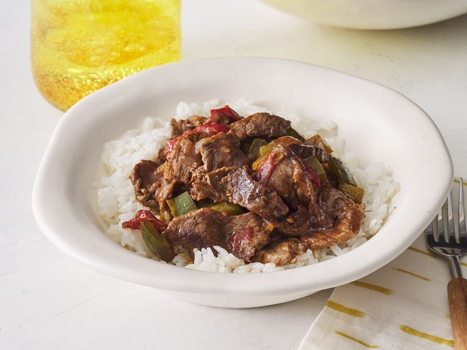

Pepper Steack

This slow cooker pepper steack always comes out tender and flavorful and is one of our family's favorites. It's great to make ahead of time and serve over rice, egg noodles, or chow mein
Ingredients
- 2 pounds beef sirlon, cut into 2 inch strips
- 3/4 teaspoon gralic powder, or to taste
- 3 tablespoons vegetable oil
- 1 cube beef bouillon
- 1/4 cup hot water
- 1 tablespoon cornstarch
- 2 large green bell peppers, roughly chopped
- 1 (14.5 ounce) can stewed tomatoes, with liquid
Steps
- Gather all Ingredients
- Sprinkle beef sirloin strips with garlic powder. Heat vegetable oil in a large skillet over medium heat and sear beef strips, about 5 minutes per side. Transfer to a slow cooker.
- Mix bouillon cube with hot water in a separate container until dissolved, then mix in cornstarch until dissolved.
- Pour into the slow cooker with beef strips. Stir in onion, green peppers, stewed tomatoes, soy sauce, sugar, and salt.
- Cover, and cook on High for 3 to 4 hours, or on Low for 6 to 8 hours.
Return Recipes